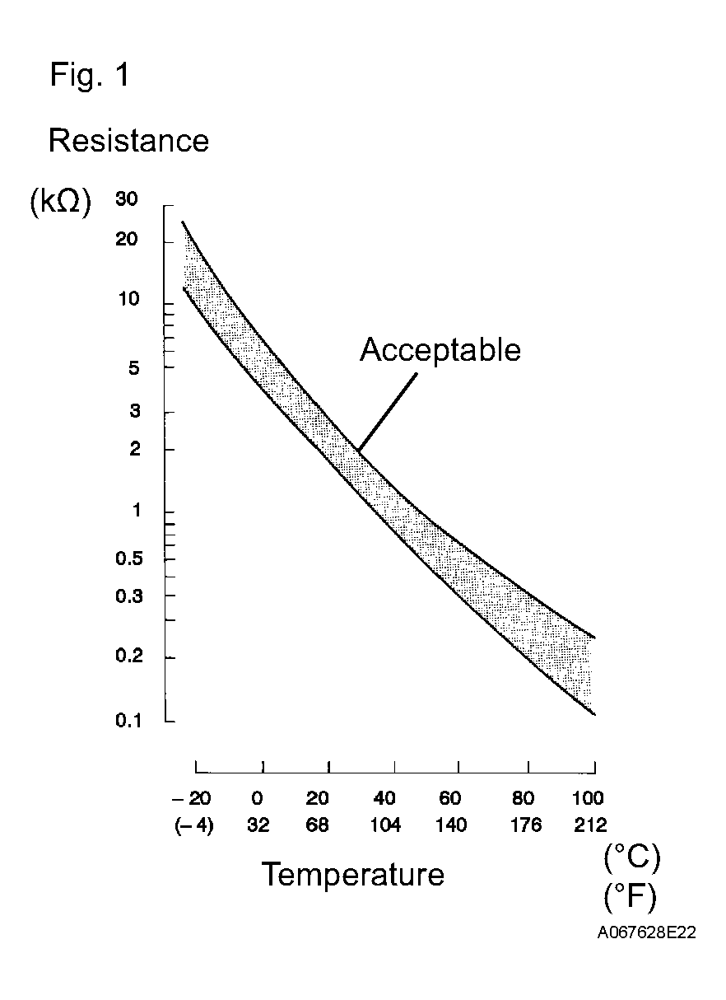

DTC P0110 Intake Air Temperature Circuit Malfunction; DTC P0112 Intake Air Temperature Circuit Low Input; DTC P0113 Intake Air Temperature Circuit High Input: Description

Courtesy of © TOYOTA, LICENSE AGREEMENT TMS1002The Intake Air Temperature (IAT) sensor, mounted on the Mass Air Flow (MAF) meter, monitors the IAT. The IAT sensor has a built-in thermistor with a resistance that varies according to the temperature of the intake air. When the IAT is low, the resistance of the thermistor increases. When the temperature is high, the resistance drops. These variations in resistance are transmitted to the ECM as voltage changes (see Fig 1).

The IAT sensor is powered by a 5 V supply from the THA terminal of the ECM, via resistor R.
Resistor R and the IAT sensor are connected in series. When the resistance value of the IAT sensor changes according to changes in the IAT, the voltage at terminal THA also varies. Based on this signal, the ECM increases the fuel injection volume when the engine is cold to improve driveability.
HINT:
When any of DTCs P0110, P0112 and P0113 are set, the ECM enters fail-safe mode. During fail-safe mode, the IAT is estimated to be 20°C (68°F) by the ECM. Fail-safe mode continues until a pass condition is detected.
| DTC No. | DTC Detection Condition | Trouble Area |
|---|---|---|
| P0110 | Open or short in IAT sensor circuit for 0.5 seconds (1 trip detection logic) |
|
| P0112 | Short in IAT sensor circuit for 0.5 seconds (1 trip detection logic) |
|
| P0113 | Open in IAT sensor circuit for 0.5 seconds (1 trip detection logic) |
|
HINT:
When any of these DTCs are set, check the IAT by entering the following menus on the intelligent tester:
DIAGNOSIS / ENHANCED OBD II / DATA LIST / PRIMARY / INTAKE AIR.
| Temperature Displayed | Malfunction |
|---|---|
| -40°C (-40°F) | Open circuit |
| 140°C (284°F) or higher | Short circuit |